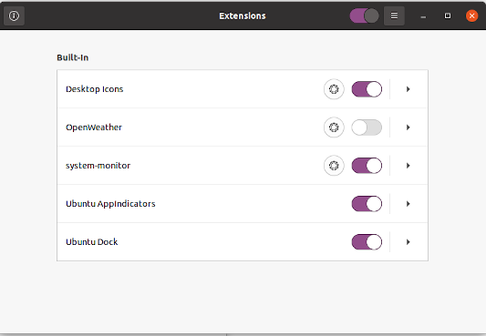
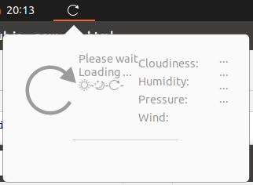
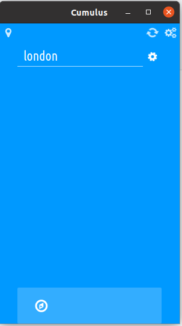
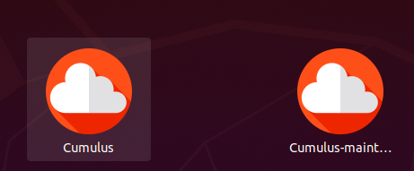

Weather Widgets
We loved to mock Windows for shipping us yet another widget while delaying Windows 11 2021.
Now in the middle of Winter, January, I want a warning before I head out.
-
The first solution is extension weather. It wants 1,203 kB of disk off me for:
chrome-gnome-shell gir1.2-handy-0.0 gnome-shell-extension-prefs gnome-shell-extension-weather gnome-tweaks
-
extensions.gnome.org I didn't think much of for the system monitor's instructions, but it leads me to their gitlab where I find exactly the same installation instruction as for the previous solution! They are one! Possibly the one.
-
addictive tips compares weather solutions. If it's the top bar we want, then it boils down to the default built-in (but not into my skimmed version apparently) or "Open Weather extension". Alternative – Open Weather extension which is the same extension as the other two. At least it has named the incumbent, "weather tracker, known as Gnome Weather."
Perhaps it is referred to as Open Weather because that is the backend service it has a key for and calls into for us.
-
Gnome Weather. It has a distinct gitlab URL and was updated just a few days ago. The installation instructions require
flatpack, of which I have no clue. People say it is the batteries-included solution, so I will persevere.
First Encounter - Gnome Weather
launchpad.net hosts a binary. They host several but their current stable deb package agrees with the versions I'm seeing in gitlab. It's also what the "Ubuntu Software" app saves us the trouble of sourcing. In fact it is the only suitable weather app they show me.
I wasn't expecting much after reading individuals' posts about Gnome Weather. I installed it. It gave no forecast or current weather but did find my location, nearly. Changing to my exact location was a mistake since the filtering of locations is broken. I discuss a workaround later but at this stage of proceedings I abandon this solution and try the four alternatives below. Upon installation I wasn't immediately furnished with even the current temperature at my approximated location. All most discouraging.
Second choice - Extension
This leaves me the original three options, which are in fact one and may as well be called Open Weather extension since it is not the bundled one but an extension, and depends on the generosity of the Open Weather servers.
I installed it and saw nothing. But of course, being an extension, and knowing what I know, I must restart the gnome session. Alt+F2, and entering "r" should do it. I had crashes. So I rebooted anyway.
I discovered why I wasn't see any weather activity in the centre of my gnome status bar. It was because this extension wasn't enabled:

I never saw the extensions app before. Must've come with gnome-shell-extension-prefs.
There's a toggle switch and settings button there. Reading the settings I could see there were
fields to accept my personal API key for OpenWeatherMap.org and Dark Sky. I wasn't about to
register for those. I would assume the reason it is broken is because the dev's key has been
over-used. It's interesting to see how pervasive API keys have become; the geek shall indeed
inherit the world of weather!
I couldn't get the toggle switch for this extension to even switch on, but I do get something in the gnome status bar at least:
sudo apt remove gnome-shell-extension-weather sudo apt autoremove
A full reboot was issued to get rid of the detritus from my status bar.
Third choice - Meteo
Not sure how I missed it but itsfoss has a list of weather apps, the first three fit in the top bar and two have already been discovered and discussed above. It is a snap but itsfoss describe it as "great", and "heavy". An exhausted me, having had no success with the previous alternatives, would say, "ideal, reminds me of the Windows widget", but I know the back end for the Windows widget would have the might of Microsoft behind it.
Besides that the link to the snap above isn't working, so instead I could try:
sudo snap install meteo
But I won't because after watching the video it appears to also use Black Sky and OpenWeatherMap. I expect they will want my key. Besides, the video made it clear it was more an "interactive" app than a widget to sit quietly in the statys bar. My cheap Chinese watches are better at telling me the weather than my computer!
Fourth choice - Cumulus
Don't know how I entertained Meteo for a third! Cumulus! Cumulus is my boy! The itsfoss roundup even sells it modestly: "Tray Icon (temperature only)". I downloaded a 5 year old binary from its github page. The whole repo hasn't been touched for five years, and it shows. It's mostly python, but v3 or v2 I cannot tell! Where is requirements.txt? Where is the author, oh, still coding in 2022.
It's a 75MB install and I couldn't see any where in the source code waiting for an API key. Plus it works with Yahoo weather allegedly!

PPA descriptionlaunchpad.net/~cumulus-team, undated
Discontinued - Does not anymore work due to API changes of Yahoo weather and Open Weather Map.
Fifth choice - My Weather Indicator
A linuxhint article using 20.10 and appearing to google to have been published in March 2021 shows an unexplored option. Given its low SEO ranking, obscurity, and the project source not having been touched since December 2020. I'm excusing myself here.
First choice - Gnome Weather
This was only my first choice because it is being bundled with full fat Ubuntu. The only perks I see are:
- Much smaller than the others.
- Supported within the distro.
- Access from the notification area.
Downsides:
- Forecasts not available, only current temperature.
- No permanent notification in the capacious status bar.
- No temperature widget, even in the notification/calendar drop down.
- Need to open the app to use it.
- Any weather web-site is better.